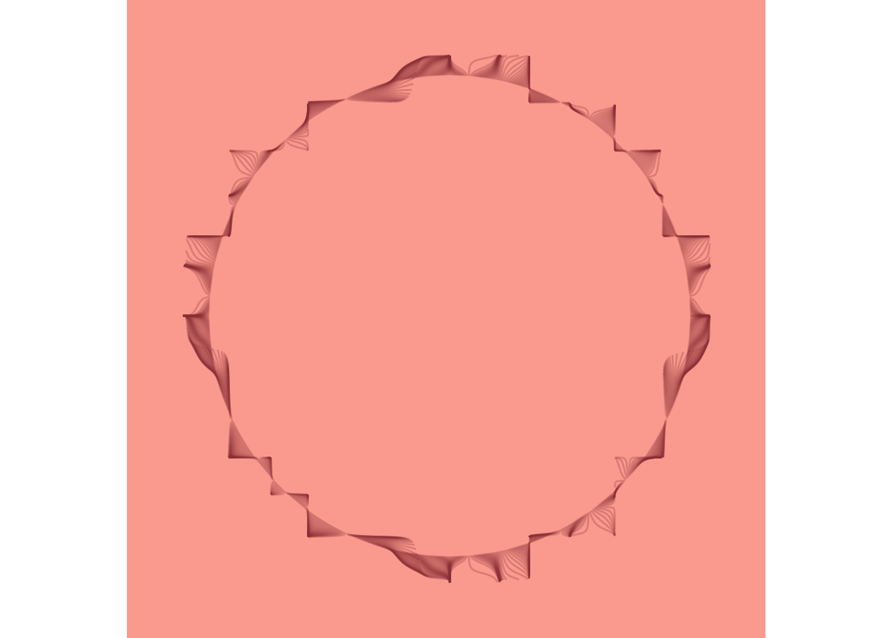
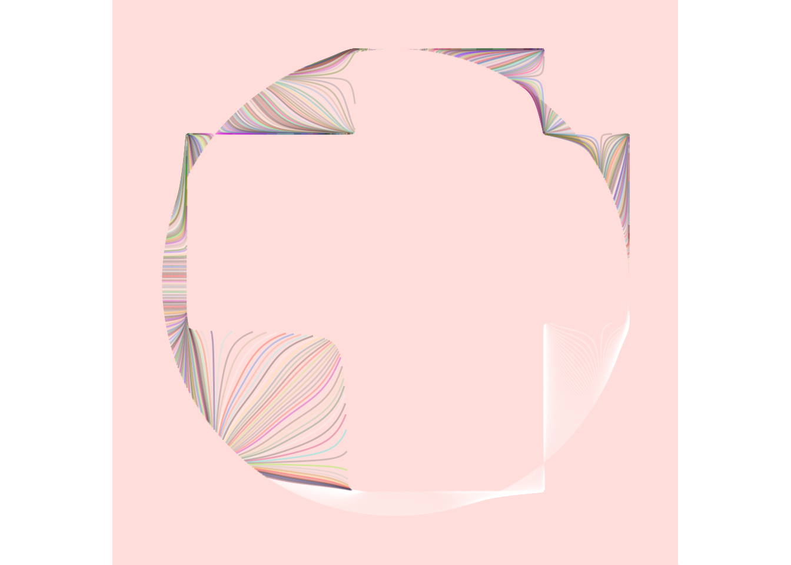
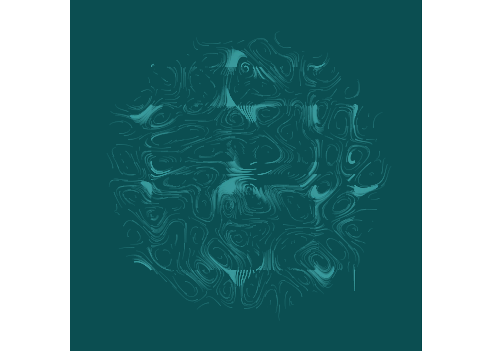
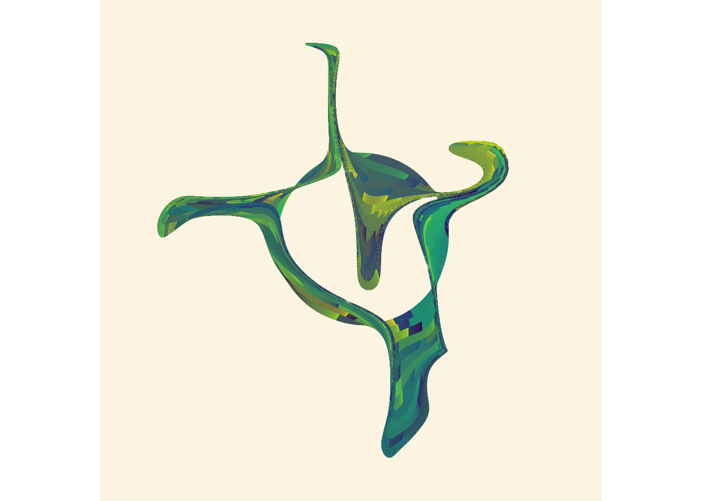

library(jasmines)
library(dplyr) For a class fall term 2021 at PSU I had to do a piece of ‘self’ art, so to expand my skills in R I decided to try out some generative art. Most of these are based off examples given on djnavarro’s github.

1. Set-Up
I will be using jasmines to create art, and dplyr to pipe the code.
2. Randi
When playing around with this package, I initially had something less fluid and full of right angles, but wanted to show more movement in the design. I have a dance background and aside from fluid movement we also focused a lot on circles and rotation. Another reason I like this design is because it reminds me of a flower. I have seven tattoos, two of which are flowers. The two colors I chose are salmon and rosewood. I enjoy different shades of pink, and colors like salmon, and rosewood feel like a more sophisticated pink to me.
use_seed(5) %>%
entity_circle(grain = 1000, size = 10) %>%
unfold_warp(iterations = 100) %>%
style_ribbon(
color = "#9E4244",
background = "#FDAB9F")
3. Unfolding Circle
use_seed(1) %>%
entity_circle(grain = 1000, size = 4) %>%
unfold_warp(iterations = 100) %>%
style_ribbon(
palette="base",
colour = "ind",
background = "mistyrose")
4. Typophobia
scene_discs(
rings = 13,
points = 500,
size = 5
) %>%
mutate(ind = 1:n()
) %>%
unfold_warp(
iterations = 10,
scale = .5,
output = "layer"
) %>%
unfold_tempest(
iterations = 10,
scale = .01
) %>%
style_ribbon(
color = "#48AAAD",
colour = "ind",
alpha = c(.4,.1),
background = "#016064"
) 
5. Snake Charmer
use_seed(4) %>%
entity_circle(grain = 10000) %>%
unfold_tempest(iterations = 13) %>%
style_ribbon(background = "oldlace")